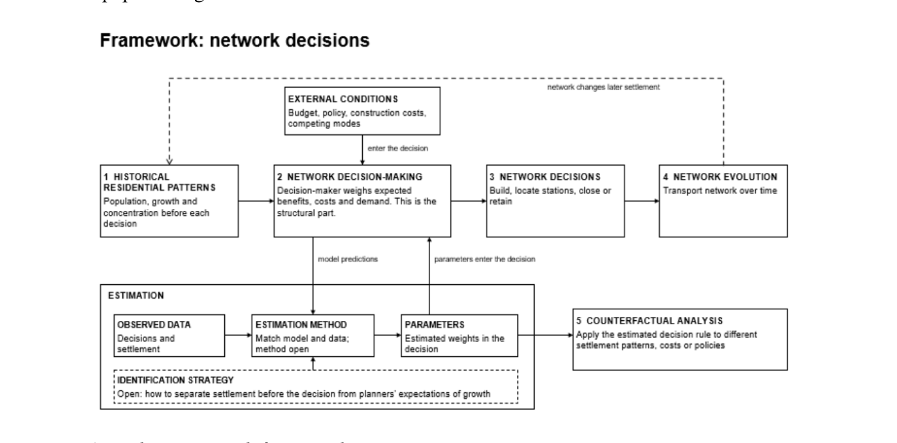

Network Decisions: Settlement and Expectations
Working draft for academic discussion — original report dated November 10, 2026.
Research report
Focus: transportation network decisions (rail and road; construction, retention and closure). It continues to develop the decision-making component of the framework.
This note includes: a comparison of evolutionary-game ideas (Section 2), a preliminary two-component decision model (Section 4), and illustrative identification checks (Sections 5 and 6). The numerical examples use assumed values, not observed network data.
1. Research focus and questions
Working Research Objective:
To develop a structural model of rail and road network decisions (building, retaining, and closing) that separates the effect of current settlement from that of expected population growth.
Main Research Question:
How do existing settlement patterns and expectations of future population growth influence decisions to build, retain, or close rail and road networks?
Methodological Research Question:
How can the influence of existing settlement patterns be distinguished from the influence of expectations of future population growth?

This week, I focused on refining the network decision-making and identification components of the framework.
3. Comment 2: Identification of current conditions and expectations
Example: Two proposed links serve areas with the same current population. A project may be supported because demand is already sufficient, or because planners expect future population growth. Observing that a link was built cannot distinguish these reasons; later growth is not a valid measure of the original expectation because the link itself may affect growth.
Relevant studies. Brueckner and Picard (2015) study a government choosing the timing and location of an irreversible infrastructure investment when its gains are imperfectly observed or uncertain. Gennaioli, Ma and Shleifer (2016) use decisionmakers’ reported earnings expectations to explain investment. An, Hu and Xiao (2021) show that preferences and subjective beliefs can be identified in dynamic discrete choice models without assuming rational expectations, under stated assumptions, and illustrate this with women’s labour participation. None addresses historical transport networks directly.
4. Preliminary decision mechanism
For a possible construction link j at time t, the simplified score is:
\[V(j,t) = a + b_P P(j,t) + b_E E(j,t) - b_C C(j,t) + b_N N(j,t)\]
- \(P\) = settlement observed before the decision;
- \(E\) = growth expected by the decisionmaker at the decision date;
- \(C\) = expected construction cost;
- \(N\) = existing network connection.
A higher score means that a link is more attractive to build. The model also considers the option of not building anything, which has a score of zero. The scores are then used to calculate the probability of choosing each option. A link with a higher score is more likely to be selected, but it is still compared with other possible links and the option of not building. The exact probability formula will be determined next week. For closure decisions, the decisionmaker chooses whether to keep or close an existing link. A link serving more people, with higher expected population growth or an important role in the network, is less likely to be closed. In contrast, high operating costs or the need for large subsidies may increase the likelihood of closure. The mathematical model for this decision will be developed next week. We also need to decide which alternatives are considered and when these decisions are made.
5. Numerical example: same population, different expectations
For a two-option demonstration (build or do not build), let V = 0.2P + 0.5E - 3, with an illustrative current settlement score P = 10 in both cases. The option of not building has a score of zero, so a positive score means that building is more attractive than not building. Values and coefficients are assumed, not estimated.
| Scenario | Current settlement P | Expected growth E | Score V | Building compared with not building |
|---|---|---|---|---|
| A: lower expectation | 10 | 2 | 0 | As attractive as not building |
| B: higher expectation | 10 | 6 | 2 | More attractive than not building |
Interpretation: Holding observed settlement fixed, a larger expected growth score raises the score for building and makes the link more likely to be chosen. This demonstrates a possible mechanism, not empirical identification.
6. Identification illustration: when are the two effects indistinguishable? (Processing)
Suppose expectations always follow current settlement exactly: E = 0.1P. Then V = (bP + 0.1bE)P - 3. Different parameters can produce the same decisions.
| Parameter | Model A | Model B |
|---|---|---|
| bP: current settlement | 0.20 | 0.25 |
| bE: expected growth | 0.50 | 0.00 |
| Combined effect bP + 0.1bE | 0.25 | 0.25 |
Both models make the same predictions for every P. Choice observation alone cannot tell whether planners responded to current settlement or expected growth when these variables are perfectly linked.
What could make them distinguishable? An independent measure of expectations recorded before a decision; credible differences in information affecting beliefs; or a dynamic structural model with assumptions that identify beliefs separately from preferences. More observations alone do not solve this problem.
An additional measure of expectations may help. In Section 5 example (V = a + bP P + bE E; a = -3), compare a reactive rule (bP = 0.25, bE = 0) with an anticipatory rule (bP = 0.20, bE = 0.50). When E = 0.1P = 1 at P = 10, both rules give V = -0.5, so both make the same prediction: building is less attractive than not building. If a credible pre-decision measure instead shows E = 6 at the same P = 10, their predictions differ:
| Rule | V at E = 1 | Building compared with not building | V at E = 6 | Pr(build) |
|---|---|---|---|---|
| Reactive | -0.5 | Less attractive | -0.5 | Less attractive |
| Anticipatory | -0.5 | Less attractive | 2.0 | More attractive |
A credible pre-decision measure of E creates a way to distinguish the predictions. Actual identification still requires enough independent variation and assumptions about other factors affecting the decision; one observed choice does not establish which rule is true.
This section uses exact algebra and hypothetical values to show when two different decision rules produce the same predicted choices. A repeated-sample maximum-likelihood simulation can be added after its code, design, and output have been checked.
Methodological implication: even if expected growth E is measured, it may be difficult to estimate its coefficient separately when E and current settlement P move almost together. The exact example above shows complete non-identification when E = 0.1P. Cases with strong but imperfect correlation need a reproducible simulation or estimation exercise before reporting numerical results.
7. Main methodological lesson
Adding expected growth to the equation is not enough. The contribution must come from a credible way to measure or identify expectations separately from current population and other reasons for the decision. My current view, to be confirmed: evolutionary games concern strategic interaction, while identification concerns what can be learned from observed choices; these are related but different questions.
8. Three points for discussion
- Should the first case focus on construction or closure as a manageable test case, while keeping both rail and road within the wider framework? 2. Which decision mechanism is essential: a single decisionmaker responding to expected benefits, or strategic interaction among governments and operators? 3. Would an expectations-based structural decision model be a useful starting point for addressing the identification problem?
9. Next three research steps
- Explore the identification conditions in An, Hu and Xiao (2021), and assess whether they could apply to network decisions.
- Develop separate simple construction and closure decision rules, showing current settlement and expected change explicitly.
- Examine an expectation rule such as E = λ × past population growth, where E still means expected
growth, not future population level. Test when current settlement and expected growth can be distinguished, and what additional information or assumptions would be needed.
References
Wang, Y., & Xiang, P. (2024). Evolutionary game and system dynamics for analysis on stakeholder strategies of regional high-speed rail project in investment decision stage. Technology in Society, 77, 102575. https://doi.org/10.1016/j.techsoc.2024.102575
Brueckner, J. K., & Picard, P. M. (2015). Where and when to invest in infrastructure. Regional Science and Urban Economics, 53, 123– 134. https://doi.org/10.1016/j.regsciurbeco.2015.05.003
Gennaioli, N., Ma, Y., & Shleifer, A. (2016). Expectations and investment. NBER Macroeconomics Annual, 30, 379–431. https://doi.org/10.1086/685965
An, Y., Hu, Y., & Xiao, R. (2021). Dynamic decisions under subjective expectations: A structural analysis. Journal of Econometrics, 222(1), 645–675. https://doi.org/10.1016/j.jeconom.2020.04.046
2. Comment 1: Can evolutionary game concepts help?
Reference: Wang and Xiang (2024), Technology in Society, 77, 102575. The authors build a tripartite evolutionary game, supported by system dynamics simulation, to study stakeholder conflict over route planning at the investment decision stage of regional high-speed rail projects in China. The players are the central government (intervene or not), the local government (negotiate or not) and China Railway (support or not). Each party’s payoff depends on the choices of the other two through rewards, penalties, costs and reputation effects. Because the parties are assumed to be boundedly rational, their strategies adjust gradually over time, and the model identifies the conditions under which each strategy combination becomes stable.
Limitation: the paper concerns conflict over the route of a single project, not the construction or closure of a network over time. It contains no settlement or expectation variables, and its parameter values are set by judgement rather than estimated from data, so it does not address identification.
Assessment: An evolutionary game is not yet necessary for every rail or road construction/closure decision. It becomes important if the decision depends on strategic responses across actors. For now, it can be employed to clarify the decisionmaker and possible strategic mechanism. This is my current view.